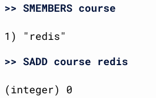
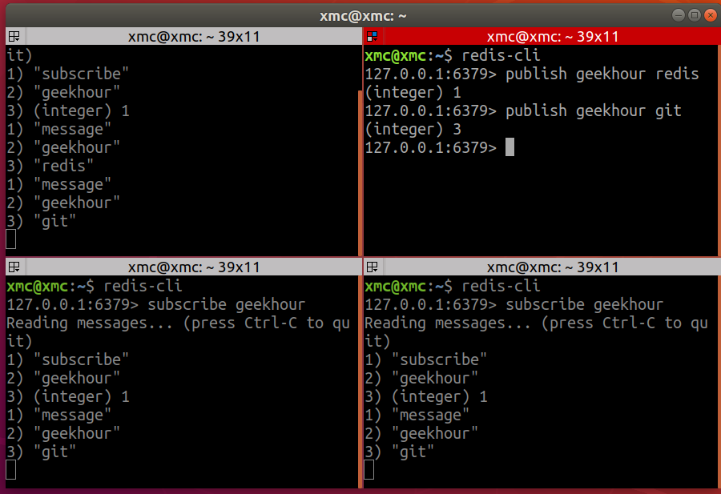
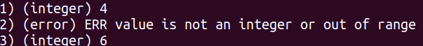

Redis
一、Redis简介
Redis基于内存的数据存储系统
| 基本数据类型 | 高级数据类型 |
|---|---|
| 字符串 String | 消息队列 Stream |
| 列表 List | 地理空间 Geospatial |
| 集合 Set | HyperLogLog |
| 有序集合 SortedSet | 位图 Bitmap |
| 哈希 Hash | 位域 Bitfield |
使用方式
- CLI 命令行接口
- API 应用程序接口
- GUI
优点
- 性能极高
- 数据类型丰富，单键值对最大支持512M大小的数据
- 简单易用，支持所有主流的编程语言
- 支持数据持久化，主从复制，哨兵模式等高可用特性
安装
1 | sudo snap install redis |
二、RedisInsight安装
1 | docker pull redislabs/redisinsight |
docker run：运行 Docker 容器的命令。-d：以分离模式（detached mode）运行容器，即在后台运行。-v /data/redisinsight:/db：将本地文件夹/data/redisinsight挂载到容器内的/db文件夹，实现文件的持久化存储。-p 8001:8001：将容器内的端口8001映射到主机的端口8001，以便可以通过主机的8001端口访问 RedisInsight。redislabs/redisinsight：要拉取和运行的 RedisInsight Docker 镜像。
程序连接redis报错，根据错误信息，redis运行在受保护模式，需要redis命令行下作设置
1 | redis-cli -p 6379 |
三、String
Redis中的数据是以键值对的形式存储的，所以要指定一个键和一个值，
键区分大小写，默认使用字符串存储
1 | redis-cli --raw #以原始的形式打印，redis中默认中文以二进制存储所以要加raw |
四、List 列表—L
1 | LPUSH letter a #将元素添加到列表的头部 从左到右一次添加到列表头部 e d c b a |
LPOP+RPUSH LPUSH+RPOP消息队列
五、集合set—S
SET是一种无序集合，列表中的元素都是可以重复的，SET不能，SET中的元素没有顺序，命令都以S开头
1 | SADD course redis #添加元素 |
添加重复的元素失败
六、有序集合SortedSet—Z
有序集合的每个元素都会关联一个浮点类型的分数，然后按照这个分数对集合中的元素进行从小到大的排序，有序集合的成员是唯一的，但是分数是可以重复的，Z开头的命令
1 | ZADD result 690 清华 700 北大 660 浙大 650 复旦 #添加元素 |
七、哈希—H
哈希是一个字符类型的字段和值的映射表，键值对的集合
1 | HSET person name laoyang #设置姓名 |
八、发布订阅模式
局限性：消息无法持久化，无法记录历史消息
1 | redis-cli |

九、消息队列Stream—X
1 | XADD geekhour * course redis #*自动生成一个消息的ID |
十、地理空间Geospatial—GEO
1 | GEOADD city 116.405285 39.904989 beijing #添加⼀个或者多个成员到地理空间中 |
十一、HyperLogLog—PF
用来做基数统计的算法
基数——集合中的每个元素都是唯一且不重复的，那么这个集合的基数就是集合中元素的个数
适合针对数据量大但精度要求不高
1 | PFADD course git docker redis #添加⼀个或者多个元素到HyperLogLog中。若key不存在则创建⼀个 |
十二、Bitmap—BIT
位图是字符串类型的扩展，可以使用一个String类型来模拟一个Bit数组，数组的下标就是偏移量，也支持一些位运算，用于记录用户的在线状态
1 | SETBIT dianzan 0 1 #设置或者清除偏移量为offset的位。offset value |
十三、位域 Bitfield
将很多小的整数存储到一个较大的位图中
记录每个玩家在游戏中的关键信息， 等级 金钱 经验
1 | BITFIELD player:1 set u8 #0 1 |
十四、Redis事务
事务也就是可以在一次请求中执行多个命令，Redis中主要通过MULTI（开启一个实物）和EXEC（执行命令）实现
关系型事务如Oracle中：要么全部执行成功要么全部执行失败
而Redis的执行结果取决于事务中的命令
Redis能保证以下三点：
- 在发送EXEC命令之前，所有的命令都会被放入到一个队列中缓存起来，不会立即执行
- 在收到EXEC命令后，事务开始执行，任何一个命令执行失败，其他命令仍会执行
- 在事务执行过程中，其他客户端提供的命令和请求并不会被插入到事务的执行命令序列中
1 | MULTI #开启事务 |

k4执行失败并不影响其他命令的执行
十五、Redis持久化
- RDB方式——在指定的时间间隔内，将内存中的数据快照写入磁盘，是某一个时间点上数据的完整副本，通过配置文件中的Save参数配置，也可以直接在终端输入save，更适合做备份，
bgsave单独创建一个子进程来负责将内存中的数据写入到硬盘中，主进程就会继续处理 - AOF方式——追加文件，在执行写命令的时候不仅会将命名写入到内存中，还会将命令写入到一个追加文件中，这个文件就是 AOF文件，配置文件中将
appendoly yes
十六、主从复制
数据的复制是单向的，只能由主节点到从节点，一般来说主节点负责写操作，从节点负责读操作，主节点会将自己的数据变化通过异步的方式发送给从节点，从节点接收到主节点的数据之后更新自己的数据。
- 命令行 不常用
- 修改配置文件


1 | redis-server redis-6830.conf |
十五、哨兵模式
哨兵会以一个独立的进程运行在redis集群中，用来监控redis各个节点是否运行正常
1 | sentinel.conf |
snap
1 | cd /var/snap/redis/common |